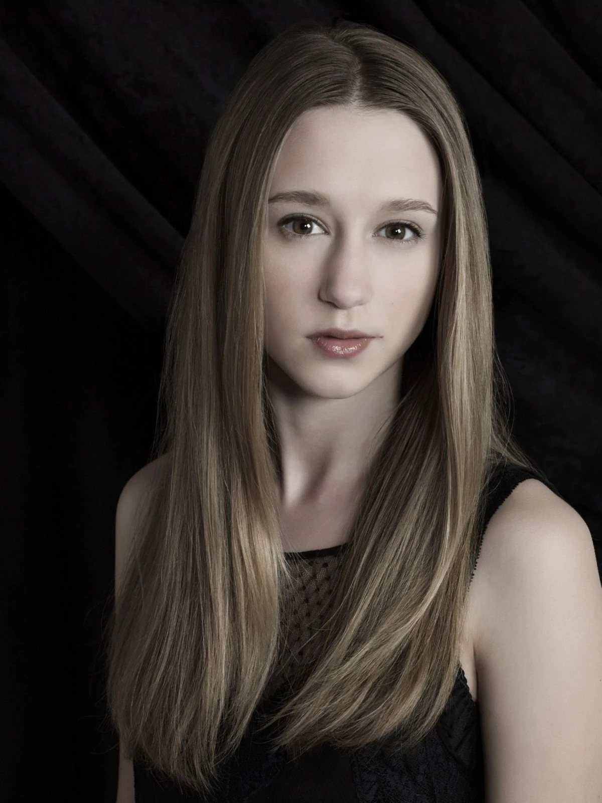
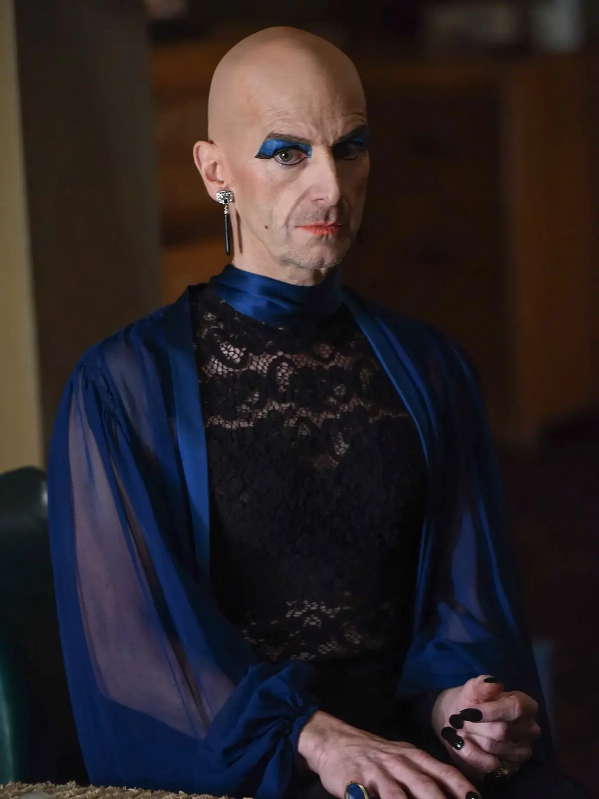
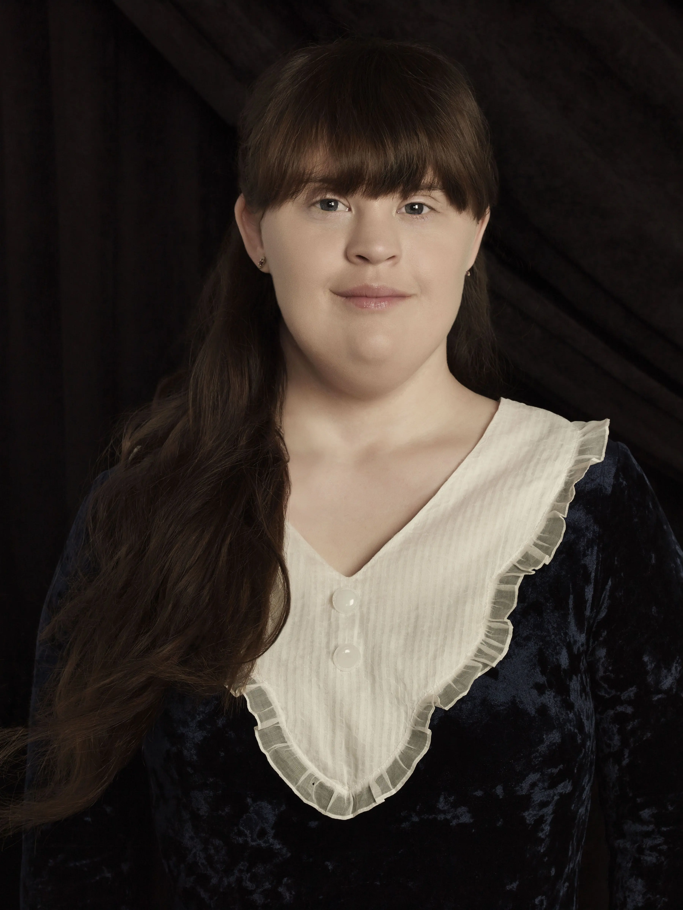

Reparto

Sarah Paulson
Es una de las actrices con mayor presencia a lo largo de la serie. Se caracteriza por asumir papeles muy diferentes entre sí, pasando de personajes vulnerables a figuras de gran autoridad. Interpretó a Lana Winters, Cordelia Foxx, Sally McKenna y Ally Mayfair-Richards, entre otros.

Evan Peters
Es conocido por interpretar personajes de personalidades muy variadas, incluyendo protagonistas, antagonistas y figuras sobrenaturales. Algunos de sus papeles más destacados son Tate Langdon, Kit Walker, Kyle Spencer, James Patrick March y Kai Anderson.

Jessica Lange
Fue una de las figuras centrales de las primeras temporadas y una de las actrices más reconocidas de la serie. Sus interpretaciones ayudaron a definir la identidad de American Horror Story durante sus primeros años. Entre sus personajes se encuentran Constance Langdon, Sister Jude, Fiona Goode y Elsa Mars.

Frances Conroy
Sus personajes suelen tener una fuerte presencia dentro de las historias en las que aparecen. Entre sus papeles se encuentran Moira O'Hara, Myrtle Snow, Gloria Mott y Belle Noir.

Taissa Farmiga
Sus personajes suelen estar relacionados con las historias sobrenaturales de la serie. Su primera aparición fue como Violet Harmon en Murder House, y posteriormente interpretó a Zoe Benson en Coven y a Sophie Green en Roanoke.

Emma Roberts
Se convirtió en una de las caras habituales de las temporadas más recientes. Sus personajes suelen tener personalidades fuertes y complejas. Interpretó a Madison Montgomery, Maggie Esmerelda, Serena Belinda y Brooke Thompson.

Denis O'here
Se destaca por la variedad de personajes que ha interpretado dentro del universo de la serie. Entre ellos se encuentran Larry Harvey, Spalding, Stanley y Liz Taylor, personajes muy diferentes tanto en personalidad como en historia.

Angela Bassett
Se incorporó al elenco en Coven interpretando a Marie Laveau, una poderosa sacerdotisa vudú. Posteriormente asumió otros papeles en diferentes temporadas, como Desiree Dupree, Ramona Royale y Monet Tumusiime.

Finn Wittrock
Su participación comenzó en Freak Show, donde interpretó a uno de los personajes más perturbadores de la temporada. También apareció como Dandy Mott, Tristan Duffy, Jether Polk y Bobby Richter.

Kathy Bates
Sus interpretaciones suelen estar vinculadas con personajes de carácter fuerte y personalidades marcadas. Debutó en la serie como Madame LaLaurie en Coven y también interpretó a Ethel Darling, Iris y Agnes Mary Winstead.

Jamie Brewer
Es especialmente reconocida por sus participaciones en las primeras temporadas. Interpretó a Adelaide Langdon, Nan, Marjorie y Chester's assistant, entre otros personajes.

Lily Rabe
Ha interpretado personajes que van desde figuras religiosas y sobrenaturales hasta personajes inspirados en personas reales. Algunos de sus papeles son Sister Mary Eunice, Misty Day, Aileen Wuornos y Shelby Miller.